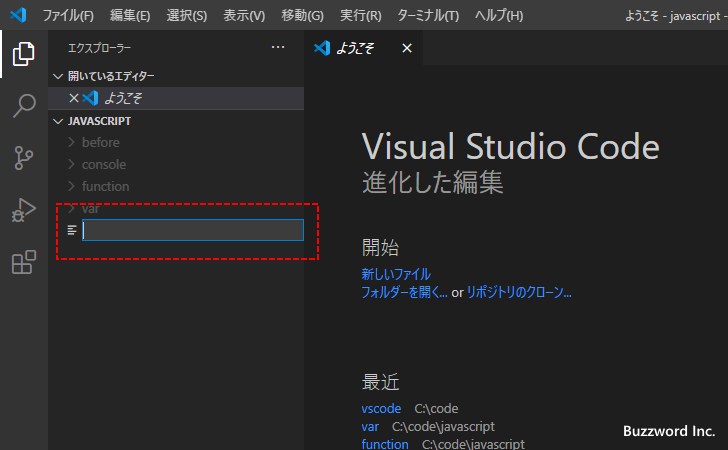
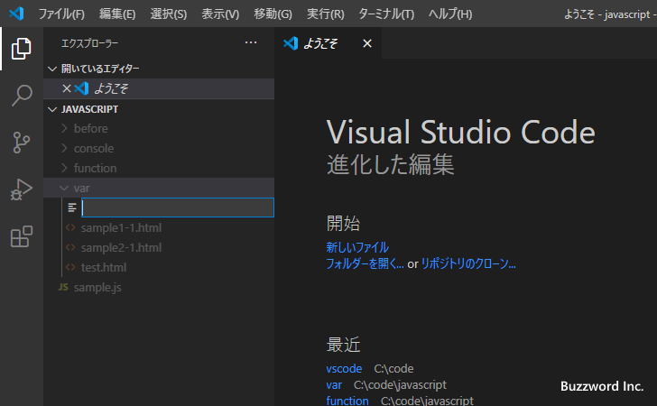

新しいファイルを作成する/ファイルを保存する
Visual Studio Code を使って新しいファイルを作成する方法、および作成したファイルを保存する方法について解説します。初めてファイルを保存したり、別の名前で保存したい場合には「名前を付けて保存」、同じファイルに上書き保存する場合は「保存」を使用します。
新しいファイルを作成する
Visual Studio Code で新しいファイルを作成する手順です。「ファイル」メニューの中の「新規ファイル」をクリックしてください。
新しいエディターが開き、編集可能な状態となります。
まだファイルに名前は付けられていないので、タブには「Untitled-xx」と表示されています。
ファイルを名前を付けて保存する
新規にファイルを作成したあとファイルを編集してまだ一度も保存していない場合、また既存ファイルの場合でも内容を編集して保存していない場合、ファイルのタブに ● が表示されます。
新規作成したファイルを保存するには「ファイル」メニューの中の「名前を付けて保存」をクリックしてください。(新規ファイルの場合は「保存」をクリックした場合も同じです)。
次のようなダイアログが表示されるので、ファイルを保存したいディレクトリへ移動しファイル名を入力してください。そのあとで「保存」をクリックしてください。
ファイルが保存されました。ファイルが保存されるとタブには保存したファイルの名前が表示され、また保存されていない内容を含むことを表す ● が表示されなくなります。
またファイルを保存すると、ファイルが何の言語(英語や日本語の言語ではなく、 HTML や JavaScript など記述している内容に関する言語です)について書いているのか判別できるようになるので、エディター上でシンタックスハイライトされて表示されるようになります。今回は HTML に関するファイルなので、ファイルに含まれるタグ名が色分けされて表示されています。
※ 新しいファイルを保存する前に言語モードを手動で設定することもできます。「ファイルの保存前に言語モードを設定する」を参照されてください。
※ ファイルを自動的に保存するように設定することもできます。詳しい手順については「エディターの自動保存の設定」を参照されてください。
開いているフォルダに新しいファイルを作成する
Visual Studio Code でフォルダを開いている場合、フォルダやサブフォルダに対して新しいファイルを作成することができます。例として次のようにフォルダを開いている状態で試してみます。
フォルダ名の右側に表示されているアイコンの中の「新しいファイル」アイコンをクリックしてください。
現在のフォルダの中にファイルが作成されます。作成する新しいファイル名を入力したあと Enter キーを押してください。

作成されたファイルがエディターで表示され、編集できる状態となります。
入力したファイル名の拡張子から、ファイルで編集している言語について自動的に判断され、シンタックスハイライトされて表示されます。
サブフォルダにファイルを作成する
なお現在開いているフォルダのサブフォルダにファイルを作成するには、サブフォルダを選択した状態で「新しいファイル」アイコンをクリックしてください。
選択していたサブフォルダに新しいファイルを作成することができます。

ファイルを上書き保存する
一度保存されたファイルを編集したあと、同じファイルに上書き保存するには「ファイル」メニューの中にある「保存」をクリックしてください。
ファイルが上書き保存されました。
-- --
Visual Studio Code を使って新しいファイルを作成する方法、および作成したファイルを保存する方法について解説しました。
( Written by Tatsuo Ikura )

著者 / TATSUO IKURA
初心者～中級者の方を対象としたプログラミング方法や開発環境の構築の解説を行うサイトの運営を行っています。